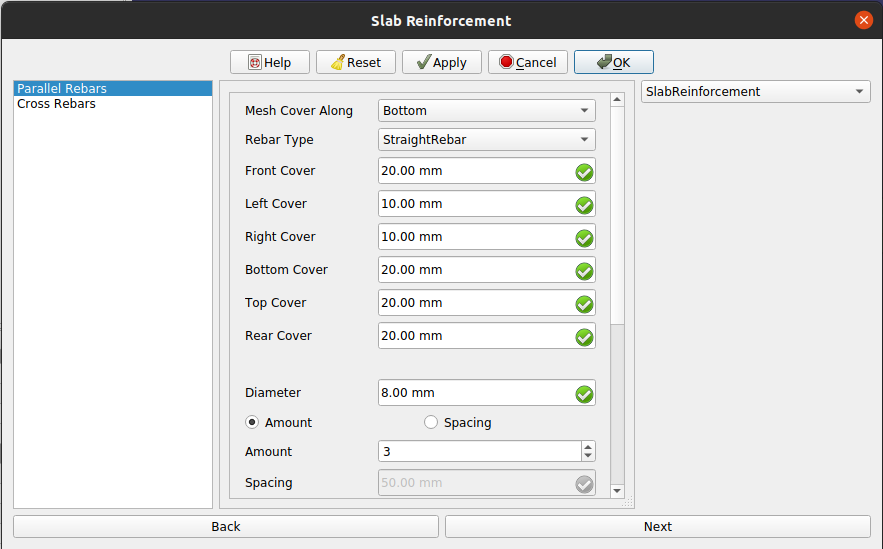
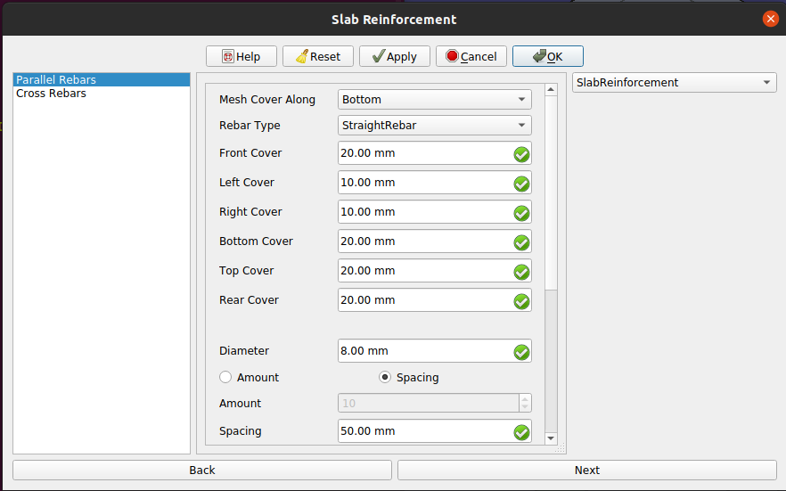
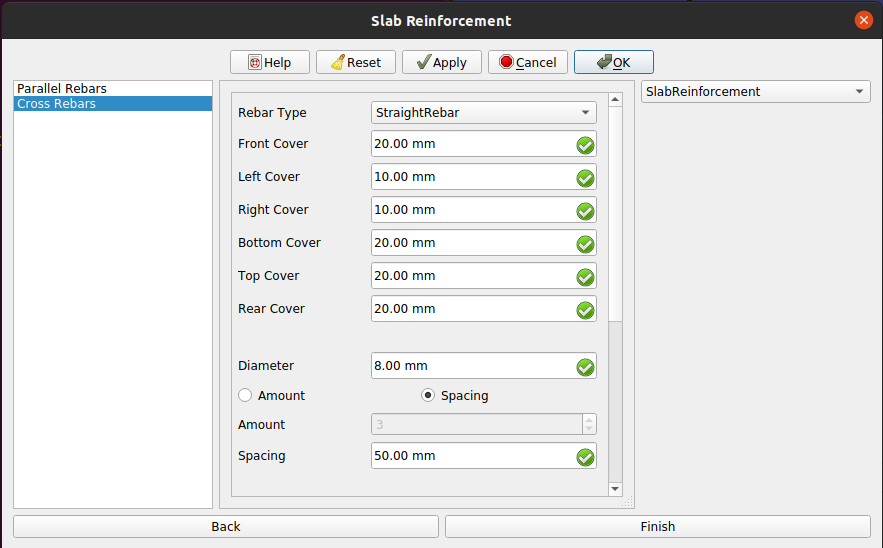

Example Slab Having Mesh Of Straight Rebars/fr
| Thème |
|---|
| Exemple de dalles avec maillage à armatures droites |
| Niveau |
| Intermédiaire |
| Temps d'exécution estimé |
| Not provided |
| Auteurs |
| Shiv Charan |
| Version de FreeCAD |
| 0.20 |
| Fichiers exemples |
| None |
| Voir aussi |
| None |
Description
L'outil  Renfort de dalle permet à l'utilisateur de créer des armatures à l'intérieur d'un objet dalle de Arch Structure.
Renfort de dalle permet à l'utilisateur de créer des armatures à l'intérieur d'un objet dalle de Arch Structure.
Cet outil fait partie de l' atelier Reinforcement, un atelier externe que vous pouvez installer avec le
atelier Reinforcement, un atelier externe que vous pouvez installer avec le  gestionnaire des extensions.
gestionnaire des extensions.
Dans cet exemple, nous allons créer une armature de dalle pour une dalle ayant un maillage de barres d'armature droites (barres d'armature droites dans les directions parallèles et transversales) comme indiqué dans la figure ci-dessous.
{kind=link}
Exemple d'armature de dalle pour une travée de dalle avec des armatures droites dans la dalle Arch Structure
Utilisation
1. Sélectionnez n'importe quelle face d'une dalle  Arch Structure déjà créée comme indiqué dans l'image ci-dessous.
Arch Structure déjà créée comme indiqué dans l'image ci-dessous.
{kind=link}
Face sélectionnée de la dalle Arch Structure
2. Sélectionnez ensuite  Slab Reinforcement dans les outils d'armature.
Slab Reinforcement dans les outils d'armature.
3. Une boîte de dialogue apparaîtra à l'écran, comme indiqué ci-dessous.

Fenêtre de dialogue pour le renfort des dalles
{kind=link}
4. Sélectionnez le type souhaité de recouvrement du maillage du renfort (Haut ou Bas). Dans l'exemple, c'est le type Bas (Bottom) qui est sélectionné.
5. Sélectionnez l'armature StraightRebar et les autres données d'entrée pour les armatures dans la direction parallèle à la face sélectionnée, comme le montre l'image ci-dessous.

Boîte de dialogue pour le renfort des dalles des armatures en direction parallèle de la face sélectionnée
{kind=link}
6. Cliquez maintenant sur le bouton Suivant ou sélectionnez Cross Rebars dans la vue en liste.
7. Sélectionnez maintenant l'armature StraightRebar et les autres données souhaitées pour les données d'entrée des armatures dans la direction transversale de la face sélectionnée, comme le montre l'image ci-dessous.

Boîte de dialogue pour le renfort des dalles des armatures dans le sens transversal de la face sélectionnée
{kind=link}
8. Cliquez sur OK ou Apply ou Finish pour générer le renfort des dalles.
9. Cliquez sur Annuler pour quitter la fenêtre de dialogue.
Propriétés utilisées pour la portée de la dalle dans une direction
Propriétés des armatures dans la direction parallèle à la face sélectionnée :
- DonnéesMesh Cover Along : représente l'alignement du maillage des barres d'armature le long de la face supérieure ou inférieure de la structure. Peut avoir deux valeurs : "Top" et "Bottom".
- DonnéesRebar Type : type de barre d'armature pour les barres d'armature parallèles pour le renforcement des dalles. Peut avoir quatre valeurs : "StraightRebar", "LShapeRebar", "UShapeRebar", "BentShapeRebar".
- DonnéesFront Cover : distance entre la barre d'armature parallèle et la face sélectionnée.
- DonnéesLeft Cover : distance entre l'extrémité gauche de la barre d'armature parallèle et la face gauche de la structure.
- DonnéesRight Cover : distance entre l'extrémité droite de la barre d'armature parallèle et la face droite de la structure.
- DonnéesBottom Cover : distance entre les barres d'armature parallèles et la face inférieure de la structure.
- DonnéesTop Cover : distance entre les barres d'armature parallèles depuis la face supérieure de la structure.
- DonnéesRear Cover : couverture arrière pour le renfort de la dalle des armatures parallèles.
- DonnéesDiameter : diamètre des barres d'armature parallèles.
- DonnéesAmount : contient le nombre de barres d'armature parallèles.
- DonnéesSpacing : contient l'espacement entre les barres d'armature parallèles.
Propriétés des armatures dans le sens transversal de la face sélectionnée :
- DonnéesRebar Type : type de barre d'armature pour les armatures transversales pour le renforcement des dalles. Peut avoir quatre valeurs : "StraightRebar", "LShapeRebar", "UShapeRebar", "BentShapeRebar".
- DonnéesFront Cover : distance entre la barre d'armature transversale et la face sélectionnée.
- DonnéesLeft Cover : distance entre l'extrémité gauche de la barre d'armature transversale et la face gauche de la structure.
- DonnéesRight Cover : distance entre l'extrémité droite de la barre d'armature transversale et la face droite de la structure.
- DonnéesBottom Cover : distance entre les armatures transversales et la face inférieure de la structure.
- DonnéesTop Cover : distance entre les armatures transversales depuis la face supérieure de la structure.
- DonnéesRear Cover : couverture arrière pour le renfort de la dalle des armatures transversales.
- DonnéesDiameter : diamètre des armatures transversales
- DonnéesAmount : contient le nombre d'armatures transversales.
- DonnéesSpacing : contient l'espacement entre les armatures transversales.
Script
Voir aussi : Arch API, Reinforcement API et FreeCAD Débuter avec les scripts.
L'outil Renfort des dalles peut être utilisé à partir de la console Python en utilisant la fonction suivante :
Créer un renfort de dalle avec des armatures droites
Pour créer un ferraillage de dalle avec des armatures droites comme indiqué dans les figures ci-dessus, vous pouvez utiliser la fonction makeSlabReinforcement comme suit :
from SlabReinforcement.SlabReinforcement import makeSlabReinforcement
SlabReinforcementGroup = makeSlabReinforcement(
parallel_rebar_type="StraightRebar",
parallel_front_cover=20,
parallel_rear_cover=20,
parallel_left_cover=10,
parallel_right_cover=10,
parallel_top_cover=30,
parallel_bottom_cover=20,
parallel_diameter=8,
parallel_amount_spacing_check=False,
parallel_amount_spacing_value=50,
cross_rebar_type="StraightRebar",
cross_front_cover=20,
cross_rear_cover=20,
cross_left_cover=10,
cross_right_cover=10,
cross_top_cover=29,
cross_bottom_cover=20,
cross_diameter=8,
cross_amount_spacing_check=False,
cross_amount_spacing_value=50,
mesh_cover_along = "Bottom",
structure=App.getDocument("slab").getObject("Beam"),
facename='Face4',
)
- Crée un objet
SlabReinforcementGrouppour le ferraillage de dalle avec des armatures droites pour lastructuredonnée, qui est une Arch Structure dalle, etfacename, qui est une face de cette structure.- Si ni
structurenifacenamene sont donnés, il prendra la face sélectionnée par l'utilisateur comme entrée.
- Si ni
Propriétés utilisées pour la portée de dalle des dalles dans deux directions pour le script
Propriétés des armatures dans la direction parallèle à la face sélectionnée :
- Donnéesparallel_rebar_type : type de barre d'armature pour les barres d'armature parallèles pour le renforcement des dalles. Peut avoir quatre valeurs : "StraightRebar", "LShapeRebar", "UShapeRebar", "BentShapeRebar".
- Donnéesparallel_front_cover : distance entre la barre d'armature parallèle et la face sélectionnée.
- Donnéesparallel_rear_cover : couverture arrière pour le renforcement de dalle des armatures parallèles.
- Donnéesparallel_left_cover : distance entre l'extrémité gauche de la barre d'armature parallèle et la face gauche de la structure.
- Donnéesparallel_right_cover : distance entre l'extrémité droite de la barre d'armature parallèle et la face droite de la structure.
- Donnéesparallel_top_cover : distance entre les barres d'armature parallèles et la face supérieure de la structure.
- Donnéesparallel_bottom_cover : distance entre les barres d'armature parallèles à partir de la face inférieure de la structure.
- Donnéesparallel_diameter : diamètre des barres d'armature parallèles.
- Donnéesparallel_amount_spacing_check : si elle vaut True, alors la valeur de parallel_amount_spacing_value est utilisée comme nombre de barres, sinon la valeur de parallel_amount_spacing_value est utilisée comme espacement dans les barres parallèles.
- Donnéesparallel_amount_spacing_value : Ccntient le nombre de barres ou l'espacement entre les barres parallèles en fonction de la valeur de amount_spacing_check.
Propriétés des armatures dans le sens transversal de la face sélectionnée :
- Donnéescross_rebar_type : type d'armature pour les armatures transversales pour le renforcement des dalles. Peut avoir quatre valeurs : "StraightRebar", "LShapeRebar", "UShapeRebar", "BentShapeRebar".
- Donnéescross_front_cover : distance entre l'armature transversale et la face transversale (face perpendiculaire à la face sélectionnée).
- Donnéescross_rear_cover : couverture arrière pour le renforcement de dalle des armatures transversales.
- Donnéescross_left_cover : distance entre l'extrémité gauche de l'armature transversale et la face gauche de la structure.
- Donnéescross_right_cover : distance entre l'extrémité droite de la barre d'armature et la face droite de la structure par rapport à la face transversale.
- Donnéescross_top_cover : distance entre la barre d'armature transversale et la face supérieure de la structure.
- Donnéescross_bottom_cover : distance entre les barres d'armature croisées de la face inférieure de la structure.
- Donnéescross_diameter : diamètre des barres d'armature transversales.
- Donnéescross_amount_spacing_check : si elle vaut True, la valeur de cross_amount_spacing_value est utilisée comme nombre de barres, sinon la valeur de cross_amount_spacing_value est utilisée comme espacement entre les barres.
- Donnéescross_amount_spacing_value : contient le nombre de barres ou l'espacement entre les barres en fonction de la valeur de cross_amount_spacing_check.
Propriétés communes des armatures parallèles et croisées :
- Donnéesmesh_cover_along : peut avoir deux valeurs "Top" et "Bottom". Représente l'alignement des mailles d'armature le long de la face supérieure ou inférieure de la structure.
- Donnéesstructure : objet de structure d'arc. La valeur par défaut est None.
- Donnéesfacename : face sélectionnée de la structure. La valeur par défaut est None.
Éditer le renfort de la dalle de la portée de dalle avec des armatures droites
Vous pouvez modifier les propriétés du renfort de la dalle pour les travées de dalles ayant une armature droite en utilisant la fonction editSlabReinforcement de la manière suivante :
from SlabReinforcement.SlabReinforcement import editSlabReinforcement
SlabReinforcementGroup = editSlabReinforcement(
SlabReinforcementGroup,
parallel_rebar_type="StraightRebar",
parallel_front_cover=20,
parallel_rear_cover=20,
parallel_left_cover=10,
parallel_right_cover=10,
parallel_top_cover=30,
parallel_bottom_cover=20,
parallel_diameter=8,
parallel_amount_spacing_check=True,
parallel_amount_spacing_value=10,
cross_rebar_type="StraightRebar",
cross_front_cover=20,
cross_rear_cover=20,
cross_left_cover=10,
cross_right_cover=10,
cross_top_cover=20,
cross_bottom_cover=20,
cross_diameter=8,
cross_amount_spacing_check=True,
cross_amount_spacing_value=10,
mesh_cover_along = "Bottom",
structure=App.getDocument("slab").getObject("Beam"),
facename='Face4',
)
slabReinforcementGroupest un objet groupeSlab Reinforcementdéjà créé.- Les autres paramètres sont les mêmes que ceux requis par la fonction
makeSingleTieFourRebars().
vous pouvez changer n'importe quelle propriété pour modifier le renfort des dalles.